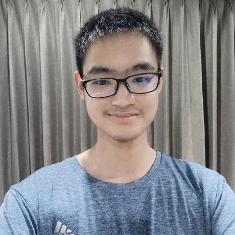

Thanarit |
|
 |
|
Hi I'm Thanarit Kanjanametawat (Bonus) |
|
Email: u6410322@au.edu |
I'm a student at Assumption University. I'm studying in the Faculty of Science and Technology. I'm currently studying in the Computer Science program. I'm interested in programming and web development. I'm also interested in learning new things and improving my skills. I'm a hardworking and responsible person. I'm always willing to learn new things and take on new challenges. I'm a team player and I work well with others. I'm also a fast learner and I'm able to adapt to new situations quickly. I'm looking forward to gaining more experience and knowledge in the field of computer science. I'm excited to see what the future holds for me. I'm confident that I will be able to achieve my goals and succeed in my career. I'm determined to work hard and do my best to reach my full potential. I'm passionate about what I do and I'm committed to making a positive impact in the world. I'm confident that I will be able to make a difference and contribute to society in a meaningful way. I'm excited to see what the future holds for me and I'm looking forward to the opportunities that lie ahead. I'm confident that I will be able to achieve my goals and succeed in my career. I'm determined to work hard and do my best to reach my full potential. I'm passionate about what I do and I'm committed to making a positive impact in the world. I'm confident that I will be able to make a difference and contribute to society in a meaningful way. I'm excited to see what the future holds for me and I'm looking forward to the opportunities that lie ahead. I'm confident that I will be able to achieve my goals and succeed in my career. I'm determined to work hard and do my best to reach my full potential. I'm passionate about what I do and I'm committed to making a positive impact in the world. I'm confident that I will be able to make a difference and contribute to society in a meaningful way. I'm excited to see what the future holds for me and I'm looking forward to the opportunities that lie ahead. I'm confident that I will be able to achieve my goals and succeed in my career. I'm determined to work hard and do my best to reach my full potential. I'm passionate about what I do and I'm committed to making a positive impact in the world.
I'm passionate about programming and web development. I enjoy working on projects and solving problems. I'm always looking for new challenges and opportunities to learn. I'm excited to see what the future holds for me and I'm looking forward to the opportunities that lie ahead. I'm confident that I will be able to achieve my goals and succeed in my career. I'm determined to work hard and do my best to reach my full potential. I'm passionate about what I do and I'm committed to making a positive impact in the world. I'm confident that I will be able to make a difference and contribute to society in a meaningful way. I'm excited to see what the future holds for me and I'm looking forward to the opportunities that lie ahead. I'm confident that I will be able to achieve my goals and succeed in my career. I'm determined to work hard and do my best to reach my full potential. I'm passionate about what I do and I'm committed to making a positive impact in the world. I'm confident that I will be able to make a difference and contribute to society in a meaningful way. I'm excited to see what the future holds for me and I'm looking forward to the opportunities that lie ahead. I'm confident that I will be able to achieve my goals and succeed in my career. I'm determined to work hard and do my best to reach my full potential. I'm passionate about what I do and I'm committed to making a positive impact in the world. I'm confident that I will be able to make a difference and contribute to society in a meaningful way. I'm excited to see what the future holds for me and I'm looking forward to the opportunities that lie ahead. I'm confident that I will be able to achieve my goals and succeed in my career. I'm determined to work hard and do my best to reach my full potential. I'm passionate about what I do and I'm committed to making a positive impact in the world. I'm confident that I will be able to make a difference and contribute to society in a meaningful way. I'm excited to see what the future holds for me and I'm looking forward to the opportunities that lie ahead. I'm confident that I will be able to achieve my goals and succeed in my career. I'm determined to work hard and do my best to reach my full potential.